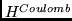
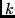
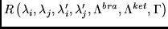
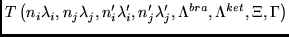

The electrostatic (Coulomb) electron interaction operator  itself contains the tensorial structure
The spin-spin operator itself contains tensorial structure of two different types, summed over k:
The spin-other-orbit operator itself contains tensorial
structure of six different types, summed over :
Now we have all we need (the operators for tensorial structure and their submatrix elements) for obtaining the value of a matrix element of these operators for any number of open shells in bra and ket functions. This lets us exploit all advantages of the approach by P2 [4].
The spin-spin and spin-other-orbit operators themselves generally contain tensorial structure of several different types. Therefore the expression (1) must be used separately for each possible tensorial structure for performing spin-angular integrations according to P2 [4]. Each type of tensorial structure is associated with a different type of recoupling matrix  and with different matrix elements of standard tensorial quantities .
The one-particle operator is treated in a similar manner. Now the expressions are much simpler and therefore we do not present them here, for brevity.